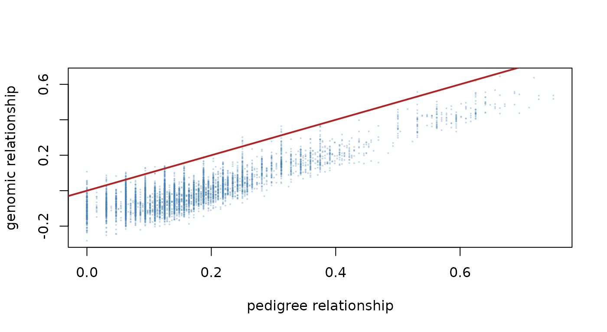
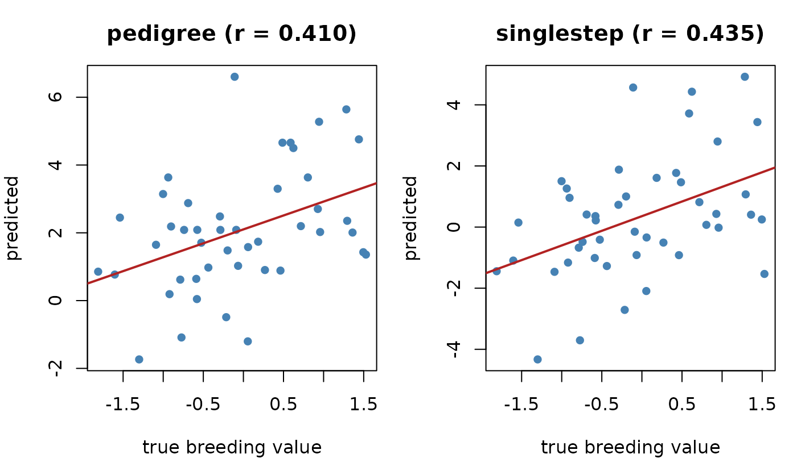

Breeding data and relationship matrices
Muhammad Farooqi
Source:vignettes/BreedingExperiment.Rmd
BreedingExperiment.RmdWhy this package
A quantitative-genetic analysis needs four things at once: the marker genotypes, the phenotypes, the pedigree, and where the markers sit on the genome. Keeping them in four separate objects is where mistakes creep in, as soon as one of them is filtered or reordered. Drop a marker from the genotype matrix and the map no longer lines up; reorder the phenotypes and every breeding value is attached to the wrong animal. Nothing warns you.
Bioconductor solved that problem generally with
SummarizedExperiment, and BreedingExperiment
applies the solution to breeding data. It extends
RangedSummarizedExperiment, so markers are rows,
individuals are columns, and marker positions are a
GRanges. Subsetting takes the genotypes, the phenotypes,
the marker coordinates and the pedigree with it. Everything you already
know about Bioconductor containers applies.
The relationship matrices are then methods on that container rather than free-standing functions fed loose matrices:
-
Amatrix(), the pedigree numerator relationship matrix; -
Gmatrix(), the genomic relationship matrix; -
Dmatrix(), the dominance relationship matrix; -
Hmatrix(), the single-step matrix combining pedigree and markers.
That last one is the reason the package exists. Real breeding programmes genotype only part of the population, and single-step genomic prediction is how the genotyped and ungenotyped parts are analysed together.
What else is available
It is worth being specific about what this package adds, because the individual matrices are not new.
On Bioconductor, relatedness is available from two directions, but never both at once:
| Package | What it gives you |
|---|---|
| SNPRelate |
snpgdsGRM(), a genomic relationship matrix from
GDS-backed genotypes, and IBD and PCA analyses. Scales far past this
package, with no pedigree. |
| GENESIS | PC-AiR and PC-Relate, kinship estimated from markers while adjusting for ancestry, plus mixed-model association testing. |
| GeneticsPed | Pedigree classes, relationship and inbreeding coefficients. Pedigree only; its own description notes that it is not stable. |
| Pedixplorer |
Pedigree objects, kinship matrices and pedigree
drawing, succeeding kinship2. Pedigree only. |
| FamAgg | Pedigree handling and tests of familial aggregation of traits. Pedigree only. |
So Bioconductor can give you relationships from a pedigree, or relationships from markers, but not a container that holds both kinds of data together and not the single-step matrix that reconciles them.
On CRAN, AGHmatrix is the closest relative and in some
ways goes further than this package. It computes A, G, dominance and H
matrices, it covers autopolyploids as well as diploids, it offers
several parameterisations of each matrix, and it is compiled, so it is
faster. What it does not do is hold your data: it takes loose matrices
and data frames and returns loose matrices, leaving the genotypes,
pedigree, phenotypes and map for you to keep aligned. The differences
worth knowing are:
-
Orientation.
AGHmatrix::Gmatrix()expects individuals in rows and markers in columns. This package follows the Bioconductor convention and puts markers in rows. -
Single-step.
AGHmatrix::Hmatrix()takes an already-computed A and G and offers the Martini and Munoz methods.Hmatrix()here works from the object, and uses the tuning and blending described below. -
Dominance.
AGHmatrixreaches dominance throughGmatrix(method = "Vitezica"); here it isDmatrix(). -
Names.
AGHmatrixalso exportsAmatrix,GmatrixandHmatrix, so loading both packages masks whichever was loaded first. UseBreedingExperiment::Gmatrix()if you need both in one session.
Choose AGHmatrix if you work on autopolyploids or want
its alternative parameterisations; choose SNPRelate if you
have hundreds of thousands of samples and no pedigree; choose this
package if your data belong in a Bioconductor container and you want the
single-step matrix.
Two limitations are worth stating plainly. The relationship matrices are dense base-R matrices, which suits thousands of individuals rather than hundreds of thousands. And the package estimates no variance components and fits no association tests: it produces the relationship structures, and a solver consumes them, as shown at the end of this vignette.
Installation
if (!requireNamespace("BiocManager", quietly = TRUE))
install.packages("BiocManager")
BiocManager::install("BreedingExperiment")The development version lives on GitHub:
BiocManager::install("mqfarooqi1/BreedingExperiment")The demonstration data
The package ships with demoBreeding, a simulated
five-generation population built to behave like a real programme rather
than a textbook example.
data(demoBreeding)
be <- demoBreeding
be
#> class: BreedingExperiment
#> markers: 900 individuals genotyped: 120
#> assays(1): genotype
#> phenotypes(6): generation sex yield stature trueBV_yield trueBV_stature
#> sequences(10): chr1 chr2 chr3 chr4 chr5 chr6
#> pedigree: 180 individuals (120 genotyped, 60 not; 30 founders)Read the last line carefully: the pedigree describes 180
individuals but only 120 were genotyped. The two earliest
generations were born before genotyping began. That is the normal
situation in a breeding programme, and it is the reason
Hmatrix() exists.
The data also carry the other awkward features of real records: a trait measured on one sex only, a little missing genotype data, and unequal family sizes because a few sires were used heavily.
table(SummarizedExperiment::colData(be)$generation)
#>
#> 3 4 5
#> 35 40 45
summary(SummarizedExperiment::colData(be)$yield) # females only
#> Min. 1st Qu. Median Mean 3rd Qu. Max. NAs
#> 4203 5605 5934 6000 6278 8097 54If you would rather generate your own population,
simulateBreeding() does that.
The standard accessors work:
dim(be)
#> [1] 900 120
genotypes(be)[1:4, 1:5]
#> C0001 C0002 C0003 C0004 C0005
#> snp00001 2 2 1 1 2
#> snp00002 1 0 2 1 1
#> snp00003 2 2 2 1 1
#> snp00004 2 1 2 1 0
head(SummarizedExperiment::colData(be), 3)
#> DataFrame with 3 rows and 6 columns
#> generation sex yield stature trueBV_yield trueBV_stature
#> <integer> <factor> <numeric> <numeric> <numeric> <numeric>
#> C0001 3 M NA 158.3 -0.3883 1.5128
#> C0002 3 M NA 139.3 0.8635 -0.5965
#> C0003 3 M NA 129.0 -0.3502 -1.7890
head(pedigree(be), 3)
#> DataFrame with 3 rows and 3 columns
#> id sire dam
#> <character> <character> <character>
#> 1 A0001 NA NA
#> 2 A0002 NA NA
#> 3 A0003 NA NABecause markers are genomic ranges, a data set can be cut down to a region:
chr1 <- be[as.character(GenomicRanges::seqnames(
SummarizedExperiment::rowRanges(be))) == "chr1", ]
dim(chr1)
#> [1] 90 120Building an object from your own data
Your own data goes in the same way:
be <- BreedingExperiment(
genotypes = dosage_matrix, # markers x individuals, 0/1/2
phenotypes = phenotype_data_frame, # one row per individual
pedigree = pedigree_data_frame, # id, sire, dam
rowRanges = marker_granges) # optional, but worth havingTwo habits are worth forming. Give phenotypes row names
that are the individual identifiers, and they will be matched by name
rather than by position; row names that do not match the genotype column
names are an error rather than something quietly overwritten. And pass
real rowRanges whenever you have them, because that is what
makes a data set subsettable by genomic region.
The pedigree may name ancestors that were never genotyped, which is
exactly what Hmatrix() needs. Parents that never appear in
the id column are added as founders, and unknown parents
may be written NA or 0.
Quality control
nrow(be)
#> [1] 900
summary(alleleFrequency(be)$callRate)
#> Min. 1st Qu. Median Mean 3rd Qu. Max.
#> 0.9583 0.9833 0.9917 0.9900 1.0000 1.0000Take the marker summaries before imputing. callRate
counts dosages that are present, so after imputation it is 1 everywhere;
observed heterozygosity, by contrast, ignores imputed cells
and is unaffected.
be <- filterMarkers(be, min_maf = 0.05, min_call_rate = 0.9)
be <- imputeMarkers(be)
nrow(be)
#> [1] 801
head(alleleFrequency(be), 3)
#> DataFrame with 3 rows and 4 columns
#> freq maf callRate heterozygosity
#> <numeric> <numeric> <numeric> <numeric>
#> snp00001 0.707627 0.2923729 1 0.483051
#> snp00002 0.605932 0.3940678 1 0.516949
#> snp00003 0.920168 0.0798319 1 0.159664Choosing the thresholds
min_maf and min_call_rate are judgement
calls, not constants of nature. Common starting points are a minor
allele frequency between 0.01 and 0.05 and a call rate between 0.90 and
0.95. Raise min_maf when the panel is large and the sample
small, because an allele seen in one or two individuals says almost
nothing about relationships while still adding noise; lower it when rare
variants are the point of the study. Filter before imputing, so that
imputation is not asked to rescue markers that should simply be
discarded.
How much this matters is worth checking rather than assuming:
# on the unfiltered data, so that every threshold has markers to remove
round(t(vapply(c(0, 0.01, 0.05, 0.20), function(m) {
G <- Gmatrix(demoBreeding, min_maf = m)
c(min_maf = m, mean_diagonal = mean(diag(G)),
sd_offdiagonal = stats::sd(G[upper.tri(G)]))
}, numeric(3))), 3)
#> min_maf mean_diagonal sd_offdiagonal
#> [1,] 0.00 0.965 0.117
#> [2,] 0.01 0.965 0.117
#> [3,] 0.05 0.964 0.117
#> [4,] 0.20 0.963 0.120imputeMarkers() fills missing dosages with twice the
allele frequency and records which cells it filled in an
imputed assay, carried through subsetting with everything
else:
SummarizedExperiment::assayNames(be)
#> [1] "genotype" "imputed"
mean(SummarizedExperiment::assay(be, "imputed")) # proportion imputed
#> [1] 0.01014357That is adequate for the low missingness left after filtering. For anything more, impute with dedicated software and pass the expected dosages in directly; the container accepts values between 0 and 2.
Relationships from the pedigree
Amatrix() builds the numerator relationship matrix. Its
entries are the familiar textbook values: one half between parent and
offspring, one quarter between grandparent and grandchild.
A <- Amatrix(be)
round(A[1:5, 1:5], 3)
#> A0001 A0002 A0003 A0004 A0005
#> A0001 1 0 0 0 0
#> A0002 0 1 0 0 0
#> A0003 0 0 1 0 0
#> A0004 0 0 0 1 0
#> A0005 0 0 0 0 1The diagonal carries inbreeding:
summary(inbreeding(be))
#> Min. 1st Qu. Median Mean 3rd Qu. Max.
#> 0.00000 0.00000 0.00000 0.03941 0.06445 0.18750Relationships from the markers
Gmatrix() is the genomic relationship matrix. It
measures what actually happened rather than what was expected: two full
sibs have a pedigree relationship of exactly 0.5, but their genomic
relationship varies around it, because Mendelian sampling gave them
different halves of their parents.
G <- Gmatrix(be)
round(G[1:5, 1:5], 3)
#> C0001 C0002 C0003 C0004 C0005
#> C0001 0.962 0.016 -0.112 -0.165 -0.184
#> C0002 0.016 1.094 -0.056 -0.073 0.057
#> C0003 -0.112 -0.056 1.143 0.080 0.099
#> C0004 -0.165 -0.073 0.080 1.002 0.057
#> C0005 -0.184 0.057 0.099 0.057 1.078The two agree in the aggregate, which is a useful sanity check on any data set:
plot(A22[upper.tri(A22)], G[upper.tri(G)], pch = 16, cex = 0.3,
col = grDevices::adjustcolor("steelblue", alpha.f = 0.3),
xlab = "pedigree relationship", ylab = "genomic relationship")
abline(0, 1, col = "firebrick", lwd = 2)
Pedigree and genomic relationships for the same pairs of individuals. The pedigree gives a few discrete values; the markers spread each of them out, and that spread is the Mendelian sampling a pedigree cannot see.
Dmatrix() gives the dominance relationships, orthogonal
to the additive ones, for models that separate the two:
Combining both: the single-step matrix
Using only G discards every ungenotyped relative. Using
only A discards the markers. Hmatrix() keeps
both, and covers every individual in the pedigree:
The genotyped block comes from the markers, the ungenotyped block
from the pedigree corrected by what the markers say about genotyped
relatives, and the off-diagonal blocks connect them. Two checks confirm
the behaviour: blending entirely towards the pedigree returns
A22, and the result stays positive definite.
H1 <- Hmatrix(be, blend = 1, tune = FALSE)
max(abs(H1[gen, gen] - A22))
#> [1] 0
min(eigen(H, only.values = TRUE)$values) > 0
#> [1] TRUEChoosing blend and tune
Leave tune = TRUE unless you have already put
G on the scale of A22 yourself. Untuned, the
two matrices usually disagree about the average level of relationship,
and that disagreement is passed straight into the ungenotyped block,
where it appears as breeding values biased between the genotyped and
ungenotyped groups.
blend has two jobs. A small weight on A22
makes the genotyped block invertible, which matters whenever there are
fewer markers than genotyped individuals, and it pulls the markers back
towards the pedigree where the marker estimate is noisy. Values between
0.01 and 0.10 are usual and 0.05 is a reasonable default: use 0.05 to
0.10 for a small marker panel and 0.01 to 0.02 for a dense one on many
individuals. blend = 0 keeps G as it is and
will fail if G is singular; blend = 1 discards
the markers altogether.
With 801 markers on 120 individuals the choice makes very little
difference here, which is itself the point: blending matters most when
G is close to singular.
A complete example: single-step BLUP
The matrices are not the end of an analysis, so here is what you do with one. These are Henderson’s mixed model equations for a single random genetic effect, solved directly with :
Put H in for
and the solution covers every individual in the pedigree, genotyped or
not. The validation is the one a breeder actually cares about: hide the
records of the youngest generation, predict their breeding values from
their parents and their markers, and see how well the predictions
correlate with the truth that the simulation knows.
ph <- SummarizedExperiment::colData(be)
ids <- rownames(H)
train <- ph$generation != 5 # records we are allowed to use
target <- colnames(be)[ph$generation == 5] # the ones we must predict
y <- ph$stature[train]
X <- matrix(1, length(y), 1) # an intercept only
Z <- matrix(0, length(y), length(ids)) # records to individuals
Z[cbind(seq_along(y), match(colnames(be)[train], ids))] <- 1
c(records = length(y), predicted = length(target))
#> records predicted
#> 75 45
blup <- function(K, h2) {
lambda <- (1 - h2) / h2
lhs <- rbind(cbind(crossprod(X), crossprod(X, Z)),
cbind(crossprod(Z, X), crossprod(Z) + solve(K) * lambda))
rhs <- rbind(crossprod(X, y), crossprod(Z, y))
stats::setNames(solve(lhs, rhs)[-1, 1], ids)
}
ebv_pedigree <- blup(A[ids, ids], h2 = 0.6)
ebv_singlestep <- blup(H, h2 = 0.6)stature was simulated with a heritability of 0.6, which
is the value used here. In a real analysis the variance components are
estimated, by REML in a package such as sommer,
rrBLUP, BGLR or lme4qtl, or by
standalone software such as ASReml or BLUPF90; all of them accept a
relationship matrix or its inverse, which is what this package
produces.
true <- stats::setNames(ph$trueBV_stature, colnames(be))
round(c(pedigree = cor(ebv_pedigree[target], true[target]),
singlestep = cor(ebv_singlestep[target], true[target])), 3)
#> pedigree singlestep
#> 0.410 0.435Adding the markers raises the correlation with the true breeding values of the unrecorded generation. The gain is real but modest, and that is honest for this data set: the simulated pedigree is complete and error-free, which is the situation in which a pedigree-only analysis does best. The advantage of single-step grows as pedigrees become incomplete and as more records accumulate on ungenotyped relatives.
op <- par(mfrow = c(1, 2), mar = c(4, 4, 3, 1))
for (nm in c("pedigree", "singlestep")) {
e <- if (nm == "pedigree") ebv_pedigree else ebv_singlestep
plot(true[target], e[target], pch = 16, col = "steelblue",
xlab = "true breeding value", ylab = "predicted",
main = sprintf("%s (r = %.3f)", nm, cor(e[target], true[target])))
abline(lm(e[target] ~ true[target]), col = "firebrick", lwd = 2)
}
Predicted against true breeding values for the youngest generation, whose records were withheld. Adding marker information tightens the relationship.
par(op)The other half of what H buys you is easy to miss: the
60 ungenotyped ancestors get predictions too, on the same scale, from
one solve.
Session information
sessionInfo()
#> R version 4.6.2 (2026-10-29)
#> Platform: x86_64-pc-linux-gnu
#> Running under: Ubuntu 26.04.1 LTS
#>
#> Matrix products: default
#> BLAS: /usr/lib/x86_64-linux-gnu/openblas-pthread/libblas.so.3
#> LAPACK: /usr/lib/x86_64-linux-gnu/openblas-pthread/libopenblasp-r0.3.32.so; LAPACK version 3.12.0
#>
#> locale:
#> [1] LC_CTYPE=C.UTF-8 LC_NUMERIC=C LC_TIME=C.UTF-8
#> [4] LC_COLLATE=C.UTF-8 LC_MONETARY=C.UTF-8 LC_MESSAGES=C.UTF-8
#> [7] LC_PAPER=C.UTF-8 LC_NAME=C LC_ADDRESS=C
#> [10] LC_TELEPHONE=C LC_MEASUREMENT=C.UTF-8 LC_IDENTIFICATION=C
#>
#> time zone: UTC
#> tzcode source: system (glibc)
#>
#> attached base packages:
#> [1] stats4 stats graphics grDevices utils datasets methods
#> [8] base
#>
#> other attached packages:
#> [1] BreedingExperiment_0.99.5 SummarizedExperiment_1.42.0
#> [3] Biobase_2.72.0 GenomicRanges_1.64.0
#> [5] Seqinfo_1.2.0 IRanges_2.46.0
#> [7] S4Vectors_0.50.3 BiocGenerics_0.58.1
#> [9] generics_0.1.4 MatrixGenerics_1.24.0
#> [11] matrixStats_1.5.0 BiocStyle_2.40.0
#>
#> loaded via a namespace (and not attached):
#> [1] Matrix_1.7-6 jsonlite_2.0.0 compiler_4.6.2
#> [4] BiocManager_1.30.27 jquerylib_0.1.4 systemfonts_1.3.4
#> [7] textshaping_1.1.0 yaml_2.3.12 fastmap_1.2.0
#> [10] lattice_0.23-1 XVector_0.52.0 R6_2.6.1
#> [13] S4Arrays_1.12.1 knitr_1.52 DelayedArray_0.38.2
#> [16] bookdown_0.48 desc_1.4.3 bslib_0.12.0
#> [19] rlang_1.3.0 cachem_1.1.0 xfun_0.62
#> [22] fs_2.1.0 sass_0.5.0 otel_0.3.0
#> [25] SparseArray_1.12.3 cli_3.6.6 pkgdown_2.2.1
#> [28] digest_0.6.39 grid_4.6.2 lifecycle_1.0.5
#> [31] evaluate_1.0.5 ragg_1.5.2 abind_1.4-8
#> [34] rmarkdown_2.32 tools_4.6.2 htmltools_0.5.9